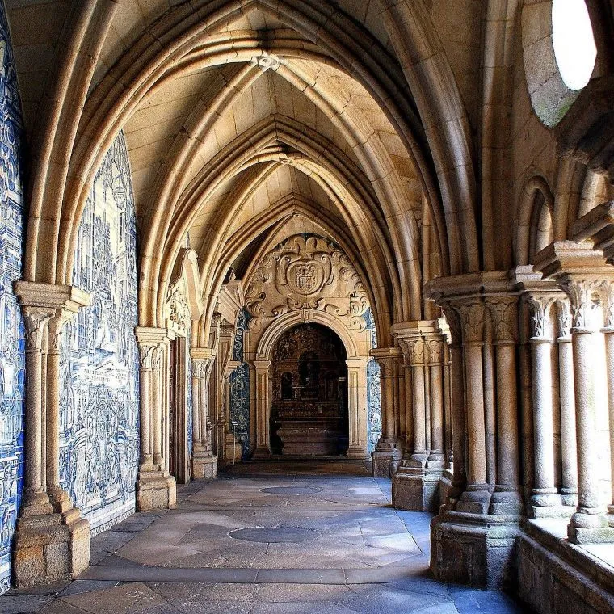
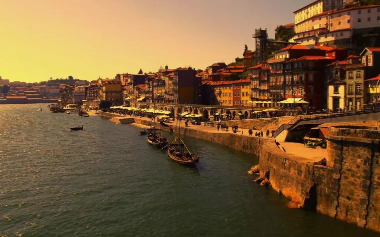
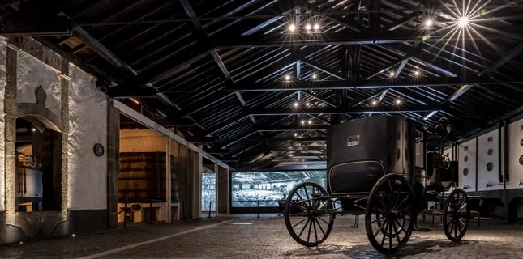

Demographics
Porto
Country: Portugal
- Region: North
- Subregion: Big Porto
- District: Porto
Area
- Municipality: 41.42 km² (15.99 sq mi)
- Elevation: 104 m (341 ft)
Population
- Municipality: 248,769
- Density: 5,596.3/km² (14,494/sq mi)
- Urban: 1,375,679
- Metropolitan area: 1,802,664
Government
President of the Commercial Association

- Nuno Botelho
Time Zone
- UTC ±00:00 (WET)
- UTC +01:00 (WEST) - Summer (DST)
History
Porto, city and port, northern Portugal. The city lies along the Douro River, 2 miles (3 km) from the river’s mouth on the Atlantic Ocean and 175 miles (280 km) north of Lisbon. World-famous for its port wine, Porto is Portugal’s second largest city and is the commercial and industrial centre for the zone north of the Mondego River. The historic centre of Porto was designated a UNESCO World Heritage site in 1996.
Porto was called Portus Cale in Roman times and was earlier a flourishing settlement on the Douro’s south bank; the nomadic Alani tribe later founded the city of Castrum Novum on the north bank. The Visigoths took possession of the site about 540 CE but yielded in 716 to the Moors. In 997 Christian forces recaptured Porto, which for a time became the capital of the counts of Portucalense (northern Portugal) during Moorish rule in the southern part of the kingdom. The Moors again held the city briefly, but in 1092 it was brought finally under Christian domination. In the 14th century the city became an important port, and Prince Henry the Navigator was born there in 1394. During the Peninsular War, British forces under Arthur Wellesley (later the duke of Wellington) there crossed the Douro, routed the French, and captured the city on May 12, 1809.
Porto’s cathedral, on the site of the Visigothic citadel, was originally a 12th-century Romanesque building with 14th-century Gothic cloisters, but it was largely rebuilt in the 17th–18th century. The Romanesque and early Gothic Church of São Martinho de Cedofeita, notable for the curiously carved capitals of its pillars, occupies the site of a church said to have been built by Theodomir, king of the Visigoths, in 559 to receive relics of St. Martin from France. Also notable are the Torre dos Clérigos, an 18th-century granite tower, 246 feet (75 metres) high; the Gothic Church of São Francisco (from 1410); and the stock exchange, with its ornately designed Salão Arabe (“Arabic Hall”; 19th century).
The contemporary city
The present-day city lies chiefly on the Douro’s north (right) bank, sprawling outward from the older riverside district known as the Ribeira. The red-tiled warehouses of the town of Vila Nova de Gaia, where vast quantities of port wine are blended and stored, are on the south bank of the Douro; other suburbs include Matosinhos, Leça da Palmeira, and Aguas Santas to the north and Gondomar and Oliveira do Douro to the southeast. The region’s narrow coastal plain quickly rises eastward to an inland undulating plateau. A mild, moist climate and generally fertile soils have encouraged intensive farming in the region, including winter and summer cereals, vegetables, and tree crops (cork oak and olive). Timber and its associated industries and the production of vinho verde (an effervescent wine) are also important.
Porto is chiefly famous for the export of the wine named for it, a popular fortified wine usually served after meals. The trade in port was begun in 1678 and was firmly established under the terms of the Methuen Treaty (1703) between England and Portugal.  An act of 1906 defined port as a wine produced in the Douro district and exported from Porto with an alcoholic strength of more than 16.5 percent. A sizable proportion of the population is engaged in manufacturing, and fisheries and tourism are also important. Just northwest of Porto, on the Atlantic coast in Matosinhos, is the deepwater artificial Port of Leixões. Porto has a high population density, and overcrowding is common. Large-scale planning and residential development improved conditions beginning in the latter part of the 20th century. The Douro River is spanned in central Porto by several bridges, notably the Dom Luís I Bridge (591 feet [180 metres]), which was built in 1881–85 from a design by a disciple of the French civil engineer Gustave Eiffel, and the Maria Pia Bridge (1876–77), designed by Eiffel himself. Porto has an international airport and is connected with Lisbon by highway and high-speed rail. The first line of a municipal subway system opened in 2002, and second and third lines began service in 2005. Three more lines were subsequently added. The Crestuma hydroelectric project on the Douro River is located about 19 miles (30 km) from the city.
Fact:
The City's nickname is Invicta. Invicta means invincible in Portuguese. This nickname is coming from the 19th Century Portuguese civil war, when Porto was never conquered and even survived a siege that lasted more than a year.
Gallery